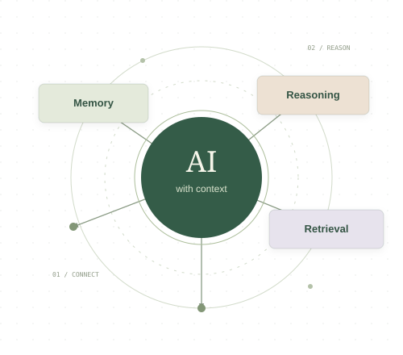

MAR 2026 — PRESENT
Reveal Data Chicago, IL
Data Scientist
Benchmarking multilingual embeddings and rerankers, balancing retrieval quality, latency, GPU usage, and cost. Optimizing LLM prompts for more consistent, evidence-aware reasoning.
Hi, I’m Thanh Vu. I turn complex data into useful AI systems, with a focus on memory, retrieval, and multi-agent reasoning.

CONNECTING KNOWLEDGE TO USEFUL ANSWERSI’m Thanh, a data scientist based in the Chicago area. My path has taken me from civil engineering research in South Korea to building AI systems in finance, HR, and multilingual retrieval.
I’m interested in how AI can remember context, find the right evidence, and bring different kinds of reasoning together.
My work brings together applied machine learning, conversational AI, and a research background in materials science.
M.S. Data Science
Harbour.Space @ University of the Thai Chamber of Commerce
Thailand · GPA 95/100
M.S. Civil Engineering
Ulsan National Institute of Science and Technology
South Korea · GPA 4.0/4.3
Benchmarking multilingual embeddings and rerankers, balancing retrieval quality, latency, GPU usage, and cost. Optimizing LLM prompts for more consistent, evidence-aware reasoning.
Designed and deployed a layered memory system for an HR chatbot, combining graph memory, hybrid retrieval, and asynchronous updates.
Built financial AI assistants and document retrieval systems. Also worked on propensity modeling, AutoML, and quantitative trading algorithms.
Collected and prepared concrete-material datasets and developed machine learning models for concrete-strength prediction.
University of the Thai Chamber of Commerce
Bangkok, Thailand
Ulsan National Institute of Science and Technology
Ulsan, South Korea
Norwegian University of Science and Technology
Trondheim, Norway
Three projects exploring how AI can remember context, reason with data, and make knowledge accessible.

Helping a chatbot carry context beyond a single conversation, through layered memory, knowledge graphs, and self-reflection.
Read the case study
Coordinating specialist ReAct loops with Python, pandas, financial data tools, and controls for execution and tracing.
Read the case study
Making bond documents easier to query with conversation-aware retrieval, reranking, and answers linked to their sources.
Read the case studyDiagrams are conceptual illustrations of the systems described.
My research background in materials science shaped how I approach experiments, evidence, and complex systems.
Thanh Duc Vu, Seongwoo Gwon, Young Cheol Choi, Myoungsu Shin
Journal of Building Engineering · Volume 80 · 108054 · 2023
Seongwoo Gwon, Seong Ho Han, Thanh Duc Vu, Myoungsu Shin
International Journal of Concrete Structures and Materials · 17, 5 · 2023
Interested in AI systems, applied research, or working together?